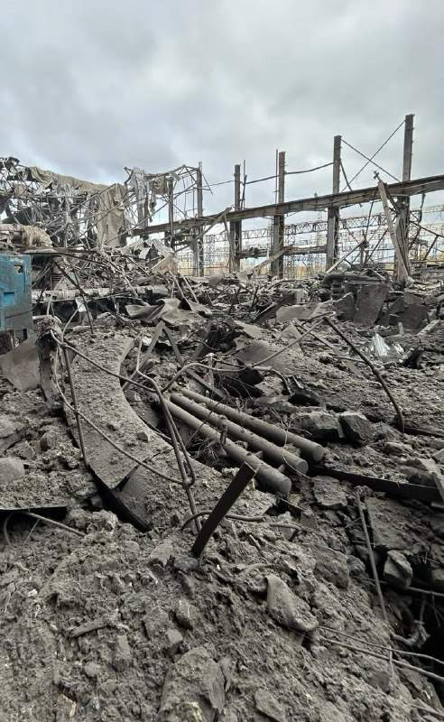
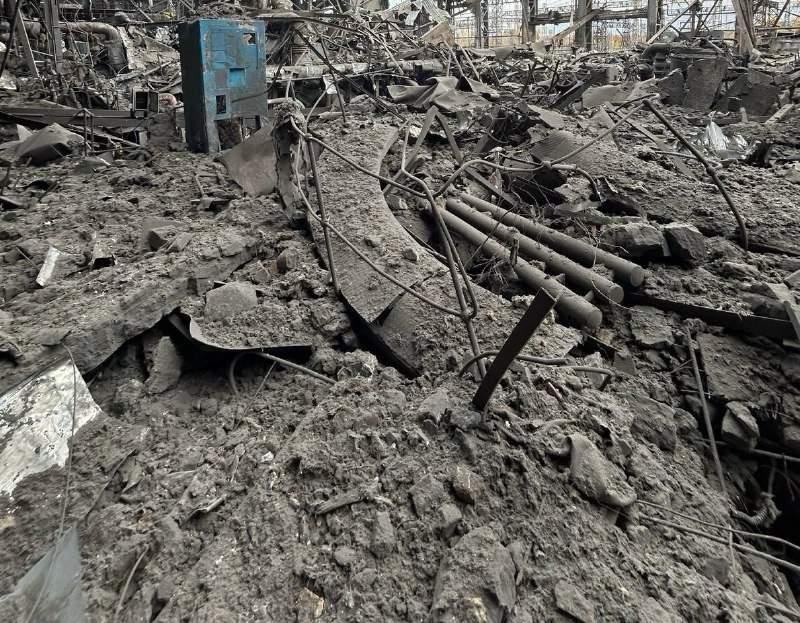
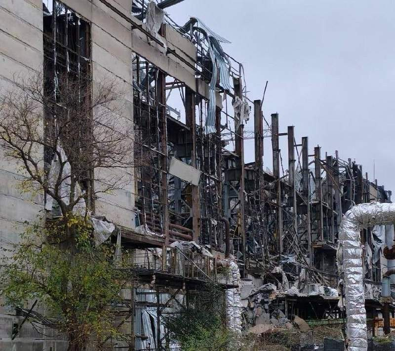
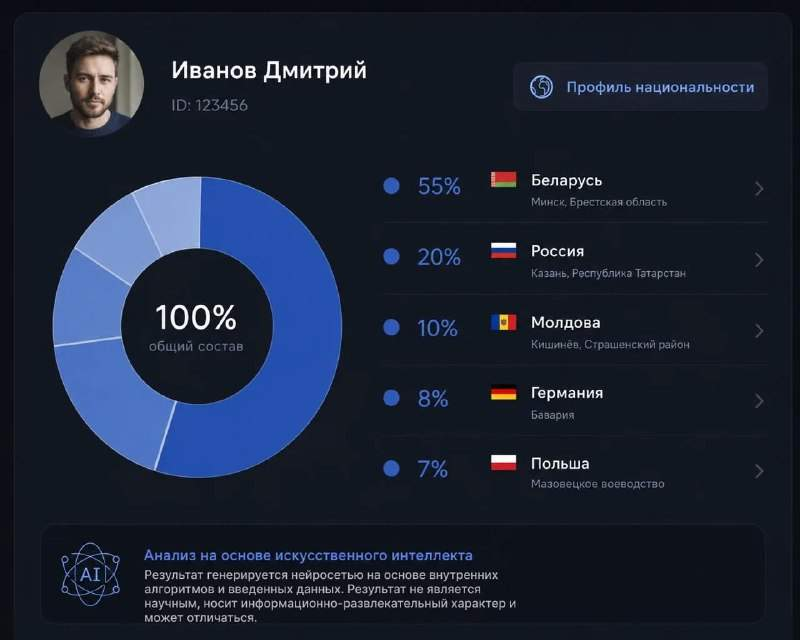
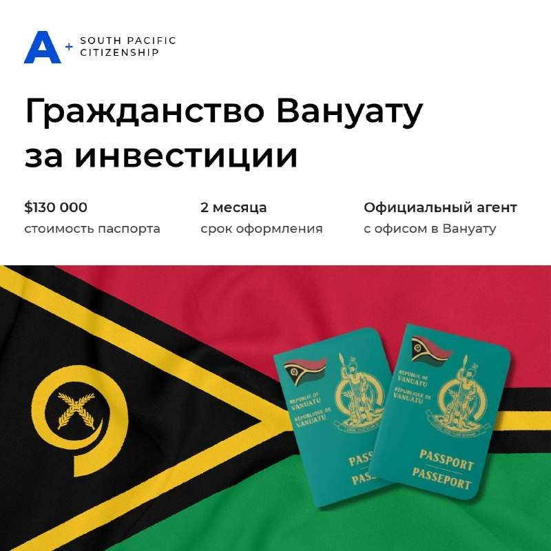

Конгрессмен от республиканцев Томас Мэсси инициирует голосование об импичменте министру обороны США Питу Хегсету, когда Конгресс возобновит работу на следующей неделе. Голосование, вероятно, будет одобрено.
Конгрессмен от республиканцев Томас Мэсси инициирует голосование об импичменте министру обороны США Питу Хегсету, когда Конгресс возобновит работу на следующей неделе. Голосование, вероятно, будет одобрено.
Консультации в Брюсселе по Украине развалились на серию встреч. Вместо общей встречи переговоры состояли из серии отдельных консультаций между делегациями ЕК, НАТО, США, Германии, Франции, Британии, Всемирного банка и Украины. При этом США принимали в них участие в удаленном режиме. Врактических результатов в контексте обсуждения возможного урегулирования на Украине. Все развалилось из-за бурной вечеринки по итогам американских выборов.



Последствия недавних российских ракетных ударов по одной из ТЭЦ DTEK. Скорее всего "Приднепровская", но разобрать трудно.

⚡️ Нейросети научились анализировать исторические данные и составлять генеалогический отчет. Теперь вы можете по ФИО и дате рождения получить подробный отчет о своих корнях, истории своей семьи и национальности. Это очень интересно, просто введите свои данные и получите отчет. Попробовать нейросеть можно тут

🇻🇺 Второй паспорт за 2 месяца. Доступный вариант для граждан РФ и РБ За последние годы стало очевидно: привычная стабильность может исчезнуть в любой момент. Ограничения, блокировки, недоступность сервисов, сложности с поездками — всё это стало частью новой реальности. 🌏 Вернуть личную и финансовую свободу поможет паспорт нейтрального государства. Сейчас одна из немногих возможностей оформить такой документ легально, дистанционно и быстро — это программа гражданства Вануату за инвестиции . Паспорт Вануату открывает: ✔️ Доступ к европейским программам ВНЖ , недоступным для граждан РФ. ✔️ Доступ к международным банковским счетам, платёжным сервисам и криптобиржам. ✔️ Надежный и конфиденциальный «План Б» в нейтральном государстве, где информация о гражданах является гостайной. ✔️ Бизнес без налогов : Вануату не облагает налогом прибыль, дивиденды, прирост капитала и наследство. ⚡️ Успейте оформить паспорт, пока программа еще открыта! Компания А+ является прямым агентом с русскоязычным офисом в Вануату. У них доступны поэтапная оплата и гарантия возврата , если в гражданстве откажут. ✍️ Подписывайтесь на канал и записывайтесь на консультацию: https://t.me/provanuatu
Пашинян окончательно определился, с Россией или без. Ну, за санкции, товарищи. Пускай продает товары в Иран.
Хуситы потребовали от Саудовской Аравии 51 миллиард долларов и официального признания в качестве правителей Йемена в обмен на прекращение боевых действий. Хуситы заявляют, что эти деньги должны компенсировать многолетние авиаудары и блокаду со стороны Саудовской Аравии, в то время как Эр-Рияд опасается, что выполнение этих требований может спровоцировать новые нападения и финансовые претензии. Наследный принц Саудовской Аравии Мухаммед бен Салман не склонен к переговорам, не добившись военных успехов, но также опасается, что отправка дополнительных наземных войск может привести к большим потерям и негативной реакции внутри страны. Заплатит?
Вице-президент США Джей Ди Вэнс возглавил усилия внутри ближайшего круга Трампа, направленные на достижение мирного урегулирования войны с Ираном. В частных беседах он критиковал премьер-министра Израиля Биньямина Нетаньяху, называя его неправым во всем в отношении Ирана. Вэнс предупреждал, что непопулярность войны в конечном итоге приведет к поражению республиканцев на промежуточных выборах, что вызывало обеспокоенность у большинства высокопоставленных чиновников администрации Трампа, и, как оказалось, это действительно произошло. Несмотря на этот совет, Трамп, под давлением Нетаньяху, рассматривал возможность возобновления ударов по Ирану перед выборами, но в конечном итоге отложил военные действия.
Материалы о российской военной разведке появятся в школьных учебниках. Собственно, в школьную программу надо было давно включить "Момент истины" ("В августе сорок четвертого").
А вот и Марджори Тейлор Грин: "Я думаю, что движение MAGA полностью умерло, и именно Трамп сам его убил". Даже известно где: в Иране.
Кличко заявил, что Киев находится на грани полного отключения электроэнергии и что дальнейшая работа городских энергетических объектов находится под большим вопросом. Кличко подчеркнул, что никакая защита не сможет спасти эти энергетические объекты, когда они подвергаются таким частым атакам.
Информация о том, что Марко Рубио может уйти из Госсекретарей последовала после опровержения ухода Хегсета. Если Рубио уйдет ради участия в президентских выборах 2028 года, это значит что с корабля Трампа побежали крысы. Но разве Рубио хочет оказаться крысой?